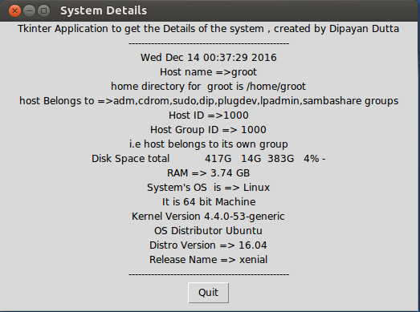

-Steve Jobs
Overview: It is often necessary for the system admin's to get all the system information like uid,gid , diskspace , ram, which Linux , What kind of Distro , What is the version number , what is the name of that version, Kernel Information etc ... So to collect all this information an system admin have run bunch commands and make down all the notes of the command output .
To make the process a bit easier what if there is a only one programm which should be able to collect all the information for you ? and event it will be a GUI (Graphical User interface) so a newbee admin even a newbee linux user also extract the system and system's hardware information . In my openion this will be a good idea . As an implementation of this idea i have created a desktop application hat will give all the system information , a single command that will produce a graphical user interface showing all the system details.
Goal:
Technology
Code is completely written python language i used python version 2.7.12 build in Ububtu 16.04 and also tested in Fedora 24. With some of the most useful python modules for system admins i.e. os module,platform module , grp module , time module , and commands module , And to make the output in a graphical window i used , Tkinter module
Getting Started ...
Few examples from the main code
This Three line of code is enough to create a graphical window on the screen , Throuh out the application development , i use this Tkinter Library , and its widgets for labeling the output in the display window
The main idea of this project is to get the output from several outputs gettting after method calls , and attached them to the display window.
First Step is to create a Frame , then pack() it with the window , then create a label , place it in the created frame and then again pack () it , Here is a little part from the main code .
Here i fetched the system time using the time module , created a frame , and on the label the output is attached , which is the packed to the Frame . Similarly if you go through the full code you will get the total idea of this application .
This is the output window of the code

★ Please make sure that the Tkinter package for python 2.7 is already installed in your system. For Fedora users , before running the python application please run this command dnf install python-tools this will install Tkinter module in your local system This will also include the idle in your system .
★ Full working code can be download or forked from my Github Repository